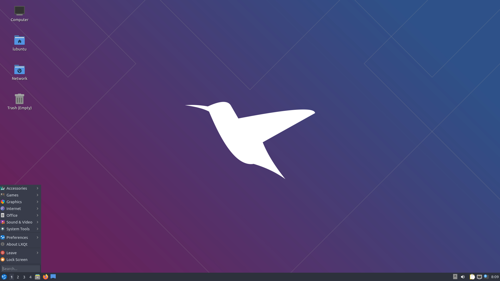
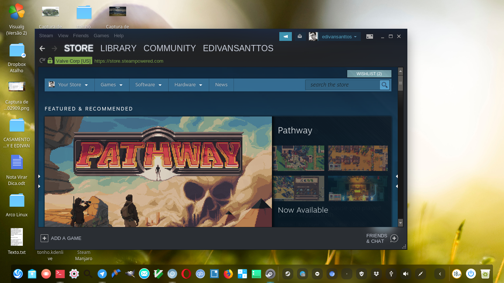

Esta página abordará sobre algumas distribuições linux, sendo elas Lubuntu e Manjaro, visando trazer as suas finalidades, bem como a minha experiência com cada uma delas.
Lubuntu é um projeto lançado dia 2 de maio de 2010 (11 anos de produção), derivado da distribuição Linux Ubuntu que atualmente utiliza do ambiente LXQt (anteriormente usava o LXDE). Seu diferencial está em seu desenvolvimento, focado computadores e notebooks antigos, com 512 MB de RAM.
Os requisitos para que se possa utilizar o lubuntu em uma máquina são extremamente básicos, um Pentium II e 512MB de RAM. Podemos perceber que a Equipe que produz essa distribuição são extremamente preocupados com os requisitos minímos para que se possa utilizar o sistema, uma prova disso foi a mudança que ocorreu em 2018, a mudança do ambiente LXDE para o LXQt, essa transição fez com que processadores 32 bits não suportassem mais o sistema, entretanto dia 26 de abril a equipe trouxe novamente o suporte a esses processadores
Sobre a minha experiência com o sitema operacional, tenho que concordar que é um sistema extremamente leve, perfeito para máquinas mais antigas ou utilizar uma máquina virtual em um computador mais "fraco", o projeto se sai muito bem naquilo que se propõe. A instalação do sistema operacional foi extremamente simples e rápida, em menos de uma hora já estava tudo pronto para uso pessoal.
Manjaro é uma distro linux com facilidade de instalação, esquema de cores, ícones, a flexibilidade e muito mais, além de ser uma distro baseada no Arch Linux. Este é um compromisso ideal para usuários avançados e novos usuários que desejam usar software de ponta, bem como estabilidade.
Manjaro vem com o cliente Steam pré-instalado, bem como os drivers de jogo para AMD Radeon e Nvidia GeForce. Os jogadores, portanto, não precisam realizar essas etapas adicionais. Assim como o Pop! _OS, o suporte do controlador também é muito bom e todos os principais funcionam bem.
Apesar destas vantagens, vale salientar que algumas grandes editoras estão ausentes no cenário Linux, editoras como, Ubisoft, EA e Blizzard não possuem suporte para linux. Infelizmente esta situação não aparenta mudar tão cedo, em 2008 usuários Linux conseguiram jogar World of Warcraft no ArchLinux via WINE, mas a Blizzard acabou banindo esses usuários com a justificativa de estarem "traceando".
Minha experiência com o Manjaro não foi muito longa, entretanto foi extremamente
positiva, ele possuí um ambiente de fácil utilização e agradável aos olhos, o fato da distribuição ja vir
com a Steam pré-instalada é algo que agiliza bastante para que o usuário em pouco tempo já comece a sua jogatina.
No geral, eu gostei bastante do Manjaro.
A instalação do sistema foi bem tranquila, entretanto, comparado ao lubuntu demorou bem mais por se tratar de uma
distribuição com outra proposta.